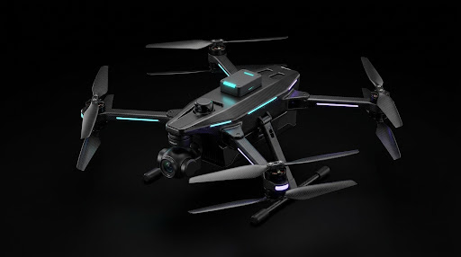
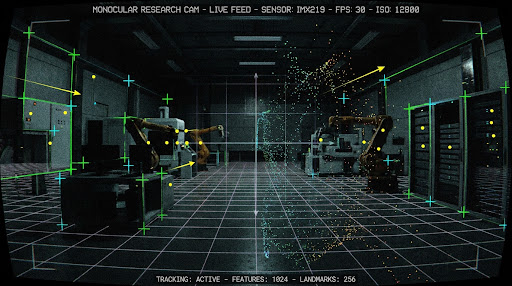

AV-NODE // 01
SYS.PLATFORM: QUADROTOR VIO-MK4
MASS: 1.50 KG [CONFIGURED]
/
RATE: 50 HZ CLOSED LOOP
/
BUS: 14.8V [4S]
/
ESTIMATOR: MSCKF NOMINAL
CONTROLLER // 50 Hz
NAVIGATING
POS
→
ATT GEN
→
SO(3)
→
CMD
POS ERR ||e_p||
0.14 m
ATT ERR ||e_R||
0.82°
FORCE ||F_d||
14.72 N
MOMENT ||M_d||
0.042 N·m

CAM: IMX219 (VIO)
BODY POSE: T_WB [BASE_LINK]
•
OPTICAL POSE: T_WC = T_WB · T_BC
•
FREQ: 50 HZ
VIO // ESTIMATOR
MSCKF ACT
IMU SAMPLE:
200 HZ [BMI088]
CAMERA SYNC:
30 FPS [18.2 ms]
FEATURES
128 (116 TRK)
SLIDING WIN
10 CLONES
TRACKING QUALITY:
91%
COVARIANCE TRACE:
1.42e-4
LIVE CAMERA - MONOCULAR VISION / FEATURE TRACKING
DEMO FEED
DEV: IMX219 (V4L2)

videocam_off
CAMERA STREAM OFFLINE
Waiting for ROS 2 topic: /camera/image_raw or /camera/vio_overlay
VIO TRACKING: LOCKED
OPTICAL POSE: T_WC
T+ 00:14:38.291
FEAT:
128
|
TRK:
116
|
FPS:
30.0
|
LATENCY:
18.2 ms
SHUTTER:
1/1200s [AUTO-GAIN]
RES: 1280x720
SYSTEM HEALTH & PIPELINE
ROS 2 DOMAIN: 42
CAMERA OPTIC
SONY IMX219
ONLINE
6-DOF IMU
BOSCH BMI088
ONLINE
MSCKF ESTIMATOR
VIO-FILTER
ACTIVE
50 Hz SO(3) CONTROLLER
drones-controller
READY
TELEMETRY INSTRUMENTATION
REF: ENU (T_WB)
POSITION [BODY: T_WB]
TOTAL: 42.8 m
X: 2.31m
Y: 1.48m
Z: 0.92m
VELOCITY [BODY]
0.46 m/s
VX: 0.42
VY: 0.18
VZ: 0.03
ATTITUDE [EULER]
DEGREES (°)
R: +2.1°
P: -1.4°
Y: 38.2°
QUAT: [0.945, 0.018, -0.012, 0.327]
VIO DRIFT & WINDOW
MSCKF OK
DRIFT: 0.04m
HEADING: 0.12°
SLIDING CLONES: 10
COV: 1.42e-4
CLOSED LOOP: 50 Hz ACTIVE
REAL-TIME TELEMETRY CHANNELS (20s ROLLING WINDOW)
ACCELERATION (IMU / m/s²)
200 HZ
WAITING FOR TELEMETRY
1G [9.81] REF
AX: +0.21 m/s²
AY: -0.14 m/s²
AZ: 9.72 m/s²
ODOMETRY (VELOCITY / m/s)
MSCKF STATE
WAITING FOR TELEMETRY
ZERO_BASE
VX: 0.42 m/s
VY: 0.18 m/s
VZ: 0.03 m/s
POSITION (WORLD FRAME / m)
T_WB EST
WAITING FOR TELEMETRY
SLAM COV-CONV
X: +2.31m
Y: +1.48m
ALT(Z): 0.92m
view_in_ar
3D VIO MAP - SPATIAL RECONSTRUCTION & SLAM RECOVERY
3D LANDMARKS: 442
•
TRAJECTORIES: T_WB (BODY) & T_WC (OPTICAL)
•
CANVAS 3D ORBIT: ACTIVE (60 FPS)
PROJECTION MODE
LAYER VISIBILITY
GRID: METRIC (2.0m STEP)
DRAG: ORBIT ROTATE
WHEEL: ZOOM
XYZ: [2.31, 1.48, 0.92]